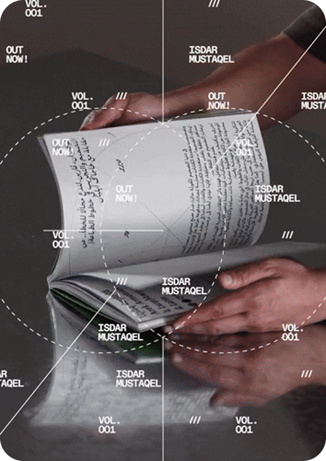
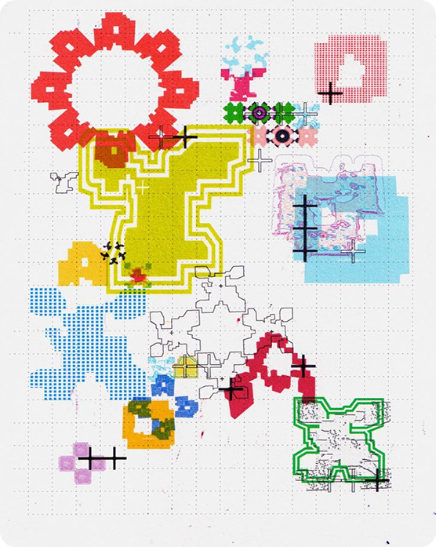
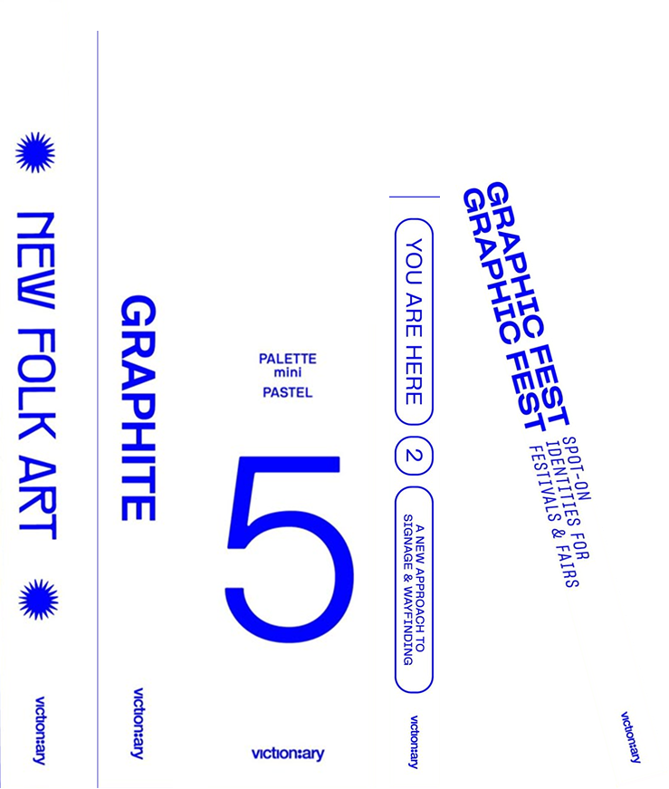

ЧТО ТАКОЕ ТИРАЖ
И ПОЧЕМУ ОГРАНИЧЕННЫЕ
ПОСТЕРЫ ЦЕННЕЕ
Когда художник выпускает постер или арт-зин, он печатает определённое количество экземпляров — это называется тираж. В случае массовой печати постеры можно выпускать снова и снова, поэтому их стоимость ниже, а доступность выше.
Совсем иначе работает ограниченный тираж. Художник или студия заранее определяют количество копий, каждый экземпляр получает свой номер и часто подпись автора. После распродажи повторного выпуска не будет — такие работы становятся уникальными и коллекционными.
Именно поэтому ограниченные постеры ценятся выше. Они воспринимаются как коллекционный объект, а не просто элемент интерьера. Подпись и номер усиливают ощущение подлинности, а редкость повышает ценность работы и превращает покупку в инвестицию. Со временем такие издания могут становиться дороже, а ограниченный тираж — это способ владеть не только изображением, но и частью истории автора.
КОНТАКТЫ
POSTERIUM
СВЯЖИТЕСЬ С НАМИ ЛЮБЫМ УДОБНЫМ СПОСОБОМ
ответим на звонок ежедневно с 9:00 до 21:00
(Москва – GMT+3)
+7 111 111 11 11
по другим вопросам напишите нам
posterium@gmail.com

FAQ
POSTERIUM

КАК ОФОРМИТЬ ЗАКАЗ?
выберите постер в каталоге, добавьте его в корзину и перейдите к оформлению. укажите контакты и способ доставки — мы подтвердим заказ на почту.
ПОЧЕМУ ОГРАНИЧЕННЫЕ ПОСТЕРЫ ДОРОЖЕ?
тиражи печатаются в ограниченном количестве, каждый постер пронумерован. чем меньше экземпляров — тем выше ценность работы.
МОЖНО ЛИ ВЕРНУТЬ ПОСТЕР?
да, если постер имеет заводской брак или повреждён при доставке. в остальных случаях возврат невозможен, так как постеры — это коллекционные предметы.
КАК СВЯЗАТЬСЯ С ВАМИ?
через форму на странице «контакты» или в наших соцсетях — мы всегда на связи.